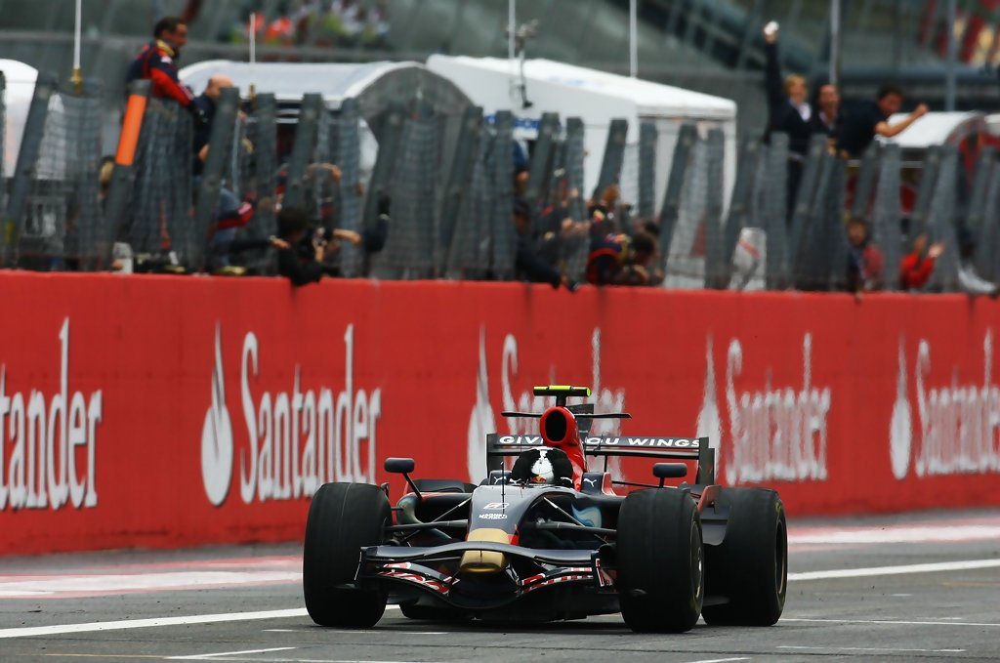

Childhood
Born in 3 July 1987, in Heppenheim. The vettel was astonished by his three "michaels" musketeers michael schumacher, michael jordon & michael jackson.
Vettel began karting at the early age of 8, and soon charged his way to the top with the incredible performance to the top league, Formula 1
click here to see all achievementsBefore F1
Vettel drove for ASL Mücke Motorsport in the 2005 Formula 3 Euro Series. He was placed fifth in the final standings with 63 points and won the Rookie Cup. He tested for the Williams Formula One team later that year as a reward for his Formula BMW success. Vettel then went on to test for the BMW Sauber Formula One team.
Vettel driving at a F3 Euroseries demonstration event in 2006 Vettel was promoted to test driver for BMW Sauber in 2006, and participated in the 2006 Formula 3 Euro Series, finishing as runner-up. He also competed in the 2006 Formula Renault 3.5 Series, where he finished first and second at Misano in his first two races. In the next round at Spa-Francorchamps, his finger was almost sliced off by flying debris following an accident, and he was expected to be out for several weeks.Nevertheless, he managed to compete in the 2006 Masters of Formula 3 at Zandvoort the following weekend, where he finished in sixth place.
Vettel competed in the 2007 Formula Renault 3.5 Series, and took his first win at the Nürburgring. He led the championship when he was called up permanently by the BMW Sauber Formula One team.
The Prime Age
Nobody knew what the young vettel was about to unleash,
A power that terrifierd rest of grid, the young driver who they considere to be "too young" & weak, terrifierdand gave chills that
the current 7 time world champion Lewis Hamilton even sometimes fear
Year, 2008
The Legendary circuit Monza was experiencing heavy rainfall. Many drivers in order to set pole lap on monza were trying their best. last 2 year champions Lewis Hamilton and Kimi Raikonnen were pushing their limits, battling to get the the pricy pole position. both drivers loosing control and dnf their qualifying. but who knew the young sebastian vettel was gonna nail the qualifying. Sebastian vettel got the pole position with the 3rd slowest car in the grid with no experience.
Many thought of this as a beginner's luck. Young seb laughed and took the challenge. On the race day, heavy rain accompanied with2 crashes and 2 safety cars, sebastian vettel got his pole position and used that position wisely winning the italian GP gracefully.
The sauber finished higher than its own senior team, because of Sebastian
In 2009, Sebastian got promoted to the senior team Red Bull, it was really interesting and exciting to see what sebastian would now do with the new team.
In order to bag the title Red Bull knew Sebastianwas the key.
Red Bull with sebastian gave their all might in hopes of that championship, unfortunately the rookie team Brawn GP was so good and equiped with new tech
The Red Bull team lost the title fight, but not heir hopes. Red Bull for the first time was now 2nd position on team standing with sebastian on 2nd in drivers standings
2010 was the year of Rage fight, the and the driver who ready to gave their all would only win the championship
The 2010 championship
Last race of 2010 championship, Alonso leading with 246 points, webber with 238, vettel with 231, Hamilton with 222. Meaning in order to win the race vettel had to make sure he wins the race plus also hope that alonso does not finish more 5th with webber in the way as well.
Sebastian took the pole position. Webber being his team mate decided towork as the wingman.
As the race started, Sebastian got a good start but alonso was right behind his tail. on the first lap michael schumacher spun out got involved in a crash giving a safety car window.
Now, with a new restart vettel charged again. both the teams Red Bull and Ferrari giving their all with the best strategies in mind and rightful play of using teammates a an obstacle. Red Bull using Mark Webber and Ferrari using Felipe Massa.
Lap 25, Hamilton realised Vettel was already way too ahead and to try for a fight. Vettel's pitstop helped him stay away from hamilton's fight. With 2 pitstops Alonso was way behind but seemed to be having a pace to catch up.
By the lap 43, on the radio sebastian said "balance is good, i can go faster". Shivering the spine of Ferrari team.Red Bull ordered Sebastian to stay easy in order to protect tires
Last Lap:- SEBASTIAN VETTEL WINS IN ABU DHABI Okay sebastian, good job, i need to wait until everybody crosses the line
Hamilton P2
Button P3
there's another two cars coming around in 15 and 16, you wait. We need those two cars mate.
Rosberg P4
Kubica P5
DU BIST WELTMIESTER